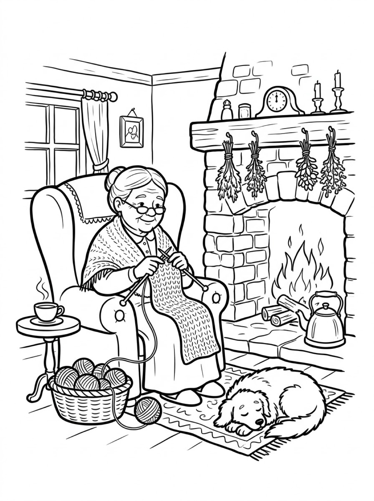
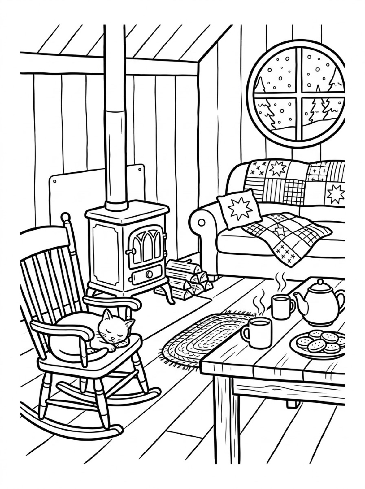

Free Cozy Coloring Pages Reading Nook, Fireside Knitting & Snowy Cabin Printables
These free cozy coloring pages are built for slow, quiet coloring time — three calm, richly detailed scenes of a rainy-day reading nook, a grandmother knitting by the fire, and a snowy cabin with the wood stove lit. They are drawn for older kids, teens and adults who like a page they can settle into. Download the set below, print at home on letter-size paper, and take your time. No signup needed.
Last updated: October 21, 2026
Quick Answer
Yes — this page has three free printable cozy coloring pages: a child reading in a window-seat nook while rain falls outside, a grandmother knitting beside a brick fireplace, and a quiet cabin room with a wood stove, quilts and snow at the round window. These are detailed scenes made for patient colorers — older kids, teens and adults. Download, print on letter-size paper, and color at your own pace — no signup, no cost.
At a Glance
- Ages: 8+ — teens & adults too
- Pages: 3 free printables
- Format: Print at home, letter size
- Cost: Free, no signup
- Supplies: Colored pencils or fine markers
- Time: 30–60 minutes of slow coloring
☕ Rainy-Day Reading Nook Coloring Page

🎨 Download Your Free Reading Nook Coloring Page
A child in star pajamas reading in a rainy-day window nook — patchwork quilt, sleeping cat and a mug of hot chocolate. Detailed and calm, zero signup.
⬇️ Download Free Reading Nook Page 🖨️ Print Reading Nook Page🎁 Free printable for older kids, teens & adults
🧶 Fireside Knitting Coloring Page

🎨 Download Your Free Fireside Knitting Coloring Page
A grandmother knitting by a brick fireplace — yarn basket, steaming tea, a kettle on the hearth and a dog asleep on the rug. Detailed and calm, zero signup.
⬇️ Download Free Fireside Knitting Page 🖨️ Print Fireside Knitting Page🎁 Free printable for older kids, teens & adults
❄️ Snowy Cabin Coloring Page

🎨 Download Your Free Snowy Cabin Coloring Page
A snowy cabin room with a wood stove, a cat on the rocking chair, patchwork quilts, a teapot and cookies. Detailed and calm, zero signup.
⬇️ Download Free Snowy Cabin Page 🖨️ Print Snowy Cabin Page🎁 Free printable for older kids, teens & adults
More Coloring Pages
Tap any picture to open its theme page and download the free printable.


☕ How To Use This Page
- Browse the three designs and pick the scene that matches your mood — rainy day, fireside or snow day.
- Tap download or print under that design — the file opens full-size, ready for letter-size paper.
- Print on slightly thicker paper if you plan to use markers, so the colors don't bleed through.
- Settle in and color slowly — one small area at a time, with a warm drink nearby. There is no deadline on a page like this.
☕ Why Cozy Scenes Are Perfect for Slow Coloring
Some coloring pages are finished in five minutes. These are not — and that is the point. Each scene is packed with the small, satisfying details of a quiet home: patchwork quilt squares, rows of books on a shelf, knitted stitches, steam curling off a teacup. Coloring them asks you to slow down and work in small patches, which is exactly what makes the activity feel restful instead of rushed.
That makes these pages a natural fit for rainy afternoons, snow days and the wind-down hour before bed. Older kids build patience and fine control as they work through the patterns, teens get a screen-free break that doesn't feel babyish, and adults rediscover why coloring books for grown-ups became a thing. Put on some music, make tea, and let the page take as long as it takes.
🛋️ Meet the Three Cozy Scenes on This Page
The reading nook in the rain. A child in star-patterned pajamas is curled up in a window seat under a big patchwork quilt, lost in a storybook, with the family cat asleep on the cushions beside them. A bookshelf runs down one side of the page, a mug of hot chocolate steams on the sill, and rain streaks the window behind. The quilt is the star of this page — dozens of patches in stars, dots and checks, each one a small decision about color.
The grandmother by the fire. In a wingback armchair beside a brick fireplace, a grandmother knits a long patterned piece from a basket of yarn balls, a cup of tea steaming on the side table and a kettle warming on the hearth. Her dog is fast asleep on the rug in front of the fire. Bundles of dried herbs hang from the mantel under a clock and candles, and the knitted stitches give patient colorers row after row of tiny, satisfying texture.
The cabin in the snow. A wood stove stands at the center of a quiet cabin room: a cat asleep on the rocking chair, a sofa piled with patchwork quilts and a star cushion, and a table set with a teapot, two steaming mugs and a plate of cookies. Through the round window, snow falls over pine trees. This is the calmest page in the set — big soft shapes for the sofa and quilts, with the stove, the log pile and the window as the detailed corners.
✏️ Coloring Tips for Detailed Pages
- Start with the patterns. Quilts, stitches and bookshelf spines are the soul of these pages. Give each quilt patch its own color, or build a repeating pattern across the patches — both work, and the pattern version is wonderfully calming to color.
- Colored pencils earn their keep. Fine points reach the small spaces — knitted rows, book spines, cookie swirls — where crayon tips can't. Keep a sharpener beside you.
- Save the glow for last. Color the fire, the stove door and the warmest corners in yellows and oranges at the end. The contrast against the cooler room makes the whole scene feel warm.
- Leave a little white. Not every patch needs color. A few white quilt squares, white steam and white snow keep the page bright and give your eyes places to rest.
🎂 Who These Pages Are For
Honestly? These pages were drawn with older colorers in mind. Kids around 8 and up who enjoy detail will get the most from them — the quilt patterns, knitting stitches and tiny background objects reward patience and a steady hand. They are a genuinely good fit for teens, too: calm, a little nostalgic, and nothing about them feels like a little-kid worksheet.
Adults are welcome at this table. Many parents print a copy for themselves and color alongside their kids, and the fireside and cabin scenes make a lovely quiet-evening project. Younger children (5 to 7) can absolutely join in — point them at the bigger shapes, like the cat, the dog, the sofa and the snow window, and let the detailed corners be a family team effort.
🛋️ Make It a Cozy Coloring Session
These pages pair naturally with the scenes inside them: hot chocolate for the reading nook, tea for the fireside, and a blanket over everyone's knees for the cabin. Print two copies of a favorite design and color it side by side with your child or your partner — same picture, completely different results, and a surprisingly good conversation starter.
When winter comes around, keep the theme going with the winter coloring pages — a snowman, a sledding hill and a frozen pond — and the Santa coloring pages, where the fireside mood continues with Santa reading his long list by the fire. Finished cozy pages also make sweet homemade cards: fold one in half, write inside, and send someone a quiet moment in an envelope.
🔗 More Free Printables You’ll Love
- Free Winter Coloring Pages A snowman with a lantern, kids sledding down to a log cabin, and a girl skating on a frozen pond.
- Free Cat Coloring Pages The cat-only sheet plus three pages with a dog and a cat together.
- Free Santa Coloring Pages Santa painting toys in his workshop, crossing a snowy rooftop, and reading his list by the fire.
- All Free Coloring Pages Browse every free coloring page on the site, organized by theme.
❓ Cozy Coloring Pages FAQ
Are these cozy coloring pages really free?
Yes — all three designs on this page are free original printables from MomYouNeedThis. Download them, print them at home, and color — no signup and no cost.
Who are these coloring pages best for?
Older kids (about 8 and up), teens and adults. The scenes are detailed — patchwork quilts, knitted stitches, rows of books — so they reward patience. Younger kids can still join in by coloring the big shapes, like the cat, the dog and the sofa.
How do I print a coloring page?
Tap the download button under the design you want, then print the file on regular letter-size paper. The print button opens the full-size page in a new tab if you prefer to print from there.
What should I color these pages with?
Colored pencils are the best match for the fine detail — quilt patches, knitted rows and book spines. Fine-tip markers work too; print on slightly thicker paper so the colors don't bleed through. Crayons are fine for the larger areas.
Can I make a coloring book from these pages?
Yes — print all three designs, stack them in order, and staple along the left edge. Add a cover sheet with the colorer's name on it for a finished homemade cozy coloring book.